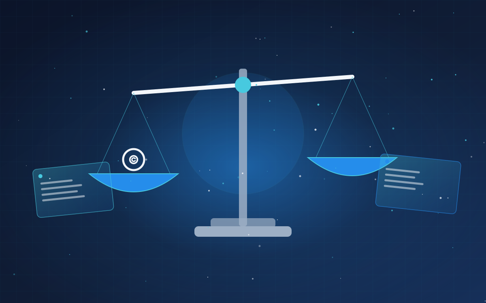

Who is responsible when AI publishes?
Khám phá những câu hỏi đạo đức và trách nhiệm trong kỷ nguyên AI: bản quyền, toàn vẹn thông tin, quyền riêng tư và vai trò của người biên tập.
AI & Copyright
Ai sở hữu nội dung do AI tạo ra?
Tác phẩm có đóng góp sáng tạo của con người
Thường được xem xét bảo hộ khi có sự lựa chọn, sắp xếp và biên tập mang dấu ấn cá nhân. Hợp đồng cần mô tả rõ phần đóng góp.
Nội dung do máy tạo ra hoàn toàn
Nhiều khung pháp lý hiện chưa công nhận bảo hộ. Nhà xuất bản nên tránh cam kết độc quyền với nội dung loại này.
Điều khoản hợp đồng
Nêu rõ mức độ AI tham gia và trách nhiệm của từng bên.
Nguồn dữ liệu huấn luyện
Ưu tiên công cụ minh bạch về nguồn dữ liệu.
Công bố sử dụng AI
Ghi chú rõ trong ấn phẩm khi AI đóng vai trò đáng kể.
AI & Information Integrity
Làm sao ngăn “ảo giác” đến tay độc giả?
Kiểm tra nguồn
Mọi số liệu và trích dẫn do máy đề xuất phải truy được về nguồn gốc.
Kiểm tra logic
Biên tập viên rà soát lập luận, tìm mâu thuẫn và khẳng định thiếu căn cứ.
Kiểm tra văn phong
Đảm bảo giọng văn, thuật ngữ và chuẩn mực biên tập của đơn vị.
Data Privacy
Bảo vệ dữ liệu độc giả trong nền tảng đọc thông minh.
Thu thập tối thiểu
Chỉ thu dữ liệu cần thiết cho tính năng đang dùng.
Giải thích rõ ràng
Nói rõ dữ liệu dùng để làm gì và lưu bao lâu.
Quyền từ chối
Cho phép tắt cá nhân hóa mà vẫn đọc được nội dung.
Xóa theo yêu cầu
Có quy trình để độc giả rút lại dữ liệu của mình.
The Editor’s Responsibility
Con người trong vòng lặp
Biên tập viên là người duyệt cuối cùng cho mọi nội dung có AI tham gia. Công cụ có thể đề xuất, nhưng không thể chịu trách nhiệm.
Trách nhiệm không thể ủy quyền cho thuật toán. Nó chỉ có thể được chia sẻ bằng quy trình rõ ràng.
— Nhận định minh họa của chuyên gia đạo đức truyền thôngCase Study
Một nhà xuất bản rút ngắn 40% thời gian hiệu đính
Dự án thí điểm công cụ hiệu đính hỗ trợ AI cho thấy hiệu quả rõ rệt, nhưng cũng bộc lộ rủi ro khi lỗi sự kiện bị bỏ sót. Bài học: tách vai trò “phát hiện” và “quyết định”.
Expert Opinions
Nội dung minh họa.
“Minh bạch về việc dùng AI không làm giảm uy tín của ấn phẩm; ngược lại, nó là điều kiện để độc giả tin tưởng.”
“Hãy bắt đầu từ chính sách ngắn gọn, đo lường được, thay vì bộ quy tắc đồ sộ không ai đọc.”
“Điều khó nhất không phải chọn công cụ, mà là giữ cho đội ngũ đủ nghi ngờ với kết quả trơn tru.”